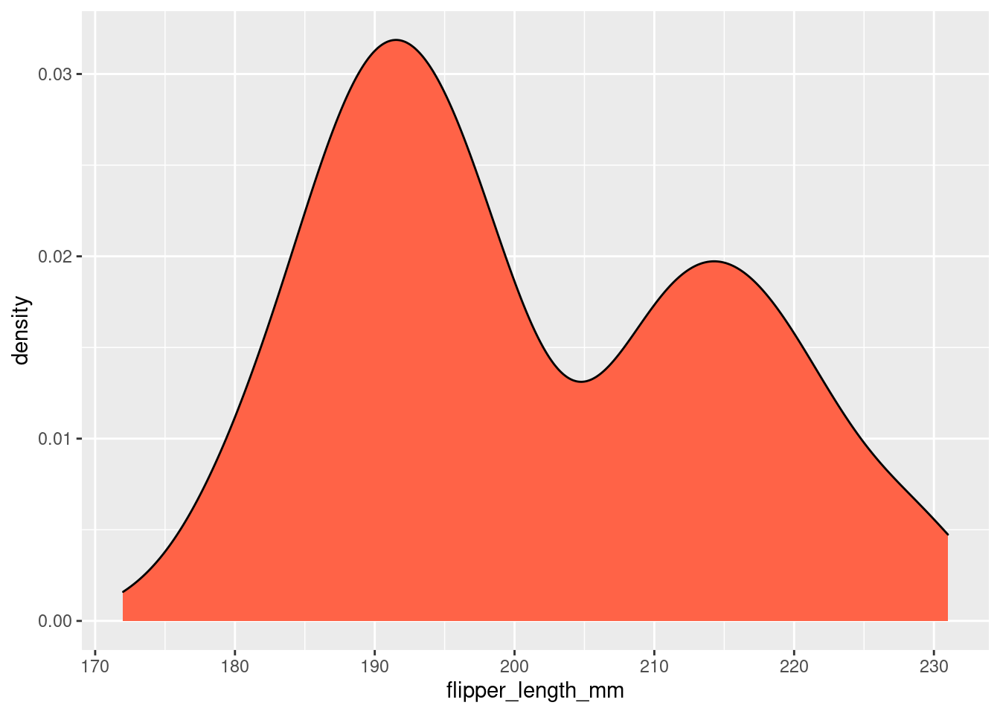

Capítulo 7 Density Plot
Nesta seção iremos aprender a criar Density Plots no R utilizando o ggplot2.
O Density plot é utilizado para visualizar a distribuição de uma variável numérica em intervalos contínuos. Esse gráfico é uma variação do gráfico de Histogramas (ver seção 6.2.2) que utiliza Kernel Smoother.
7.1 Density plot (simples)
Utilize o banco de dados iris, para plotar a distribuição da variável
Sepal.Length em um Density Plot. Utilize a função geom_density() para plotar uma variável no eixo x.
# Carrgue um banco de dados
data("iris")
# Density plot de uma variável contínua
ggplot(iris, aes(x = Sepal.Length)) +
geom_density()
7.2 Density plot (colorido)
Utilize o argumento fill para definir a cor de preenchimento do seu gráfico e o argumento alpha para definir a transparência do preenchimento. Utilize o argumento color para definir a cor da linha.
# Density plot de uma variável contínua
ggplot(iris, aes(x = Sepal.Length)) +
geom_density(fill = "tomato")
# Density plot de uma variável contínua
ggplot(iris, aes(x = Sepal.Length)) +
geom_density(fill = "lightblue", alpha = .5, color = "red")
7.3 Múltiplas categorias
Se você quiser comparar a distribuição de uma variável contínua entre diferentes categorias, você pode utilizar o argumento fill para colorir o gráfico. No exemplo abaixo, utilizamos cores diferentes para ilustrar a distribuição da variável x entre espécies diferentes (fill = Species)
# Desnity plot com cores para diferentes categorias sem sobreposição
ggplot(iris, aes(x = Sepal.Length, fill = Species)) +
geom_density() +
ggtitle("Sem sobreposiçao")
# Desnity plot com cores para diferentes categorias com sobreposição
ggplot(iris, aes(x = Sepal.Length, fill = Species)) +
geom_density(alpha = .5) +
ggtitle("Com sobreposiçao")
7.4 Density plot (bonito)
Todo o final de capítulo temos a demonstração de um gráfico mais elegante. Veja o capítulo XXX para mais detalhes de como manipular cada detalhe do seu gráfico com o ggplot2, mas ao observar o script abaixo você pode ir aprendendo com cada exemplo.
ggplot(iris, aes(x = Sepal.Length, fill = Species)) +
geom_density(alpha = .5) +
theme_classic(base_size = 18) +
scale_x_continuous(breaks = seq(from = 4,to = 8,by = 1), limits = c(4,8)) +
scale_y_continuous(breaks = seq(from = 0,to = 1.4,by = .2)) +
xlab("Comprimento da sépala (mm)") +
ylab("Density")